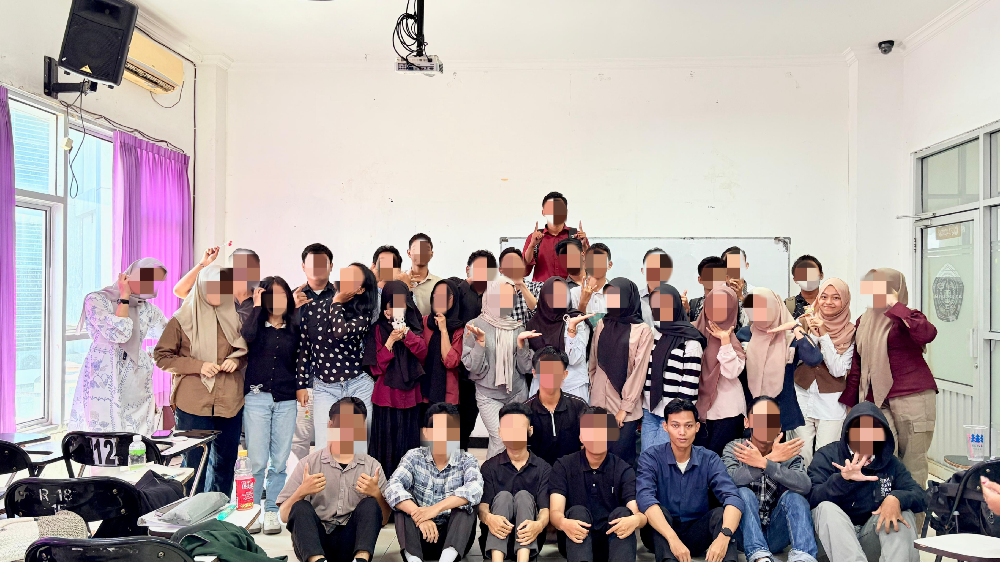
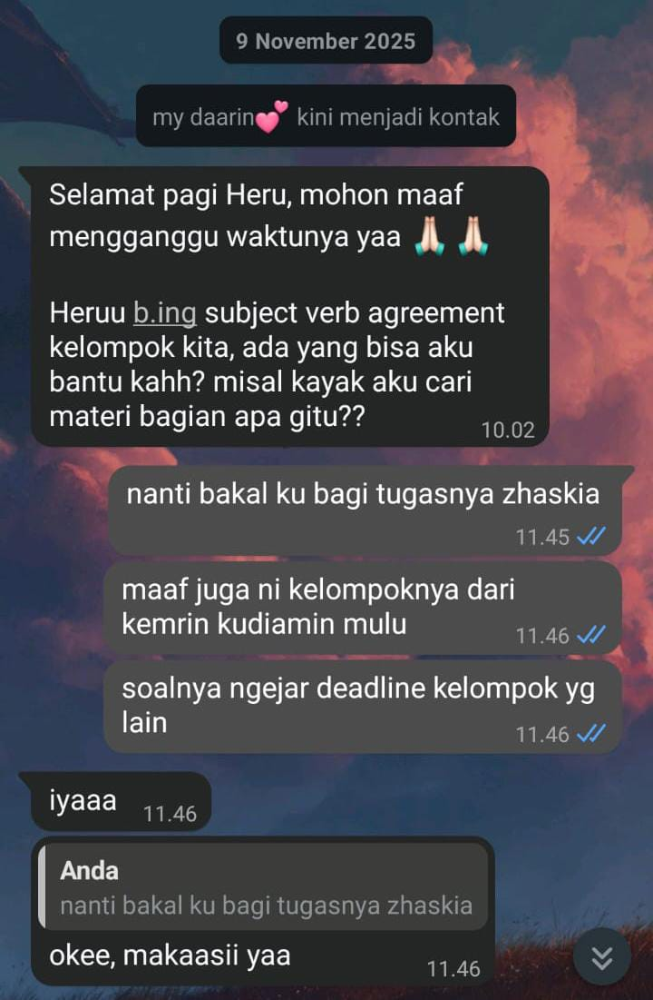
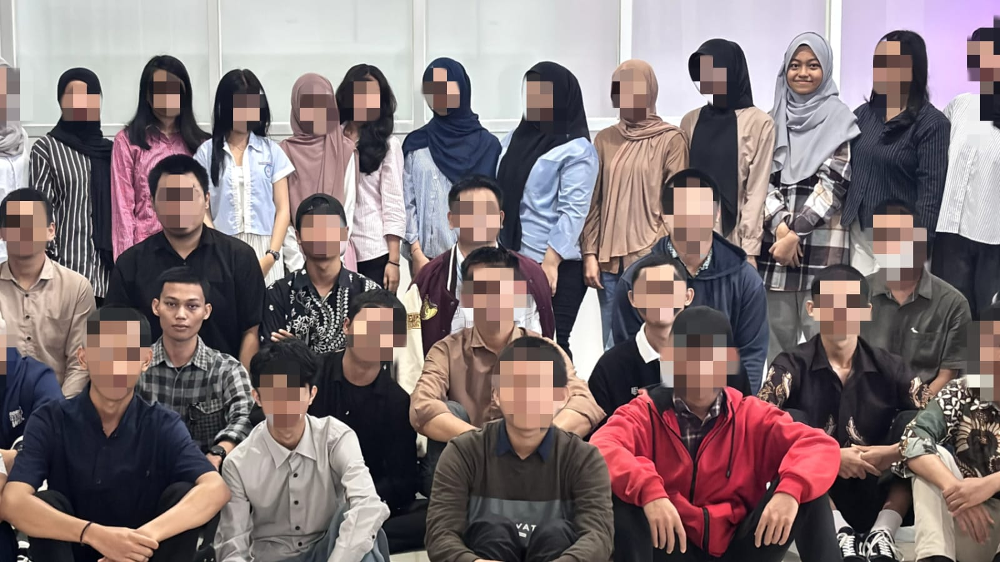
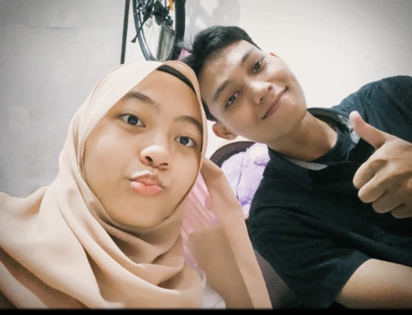
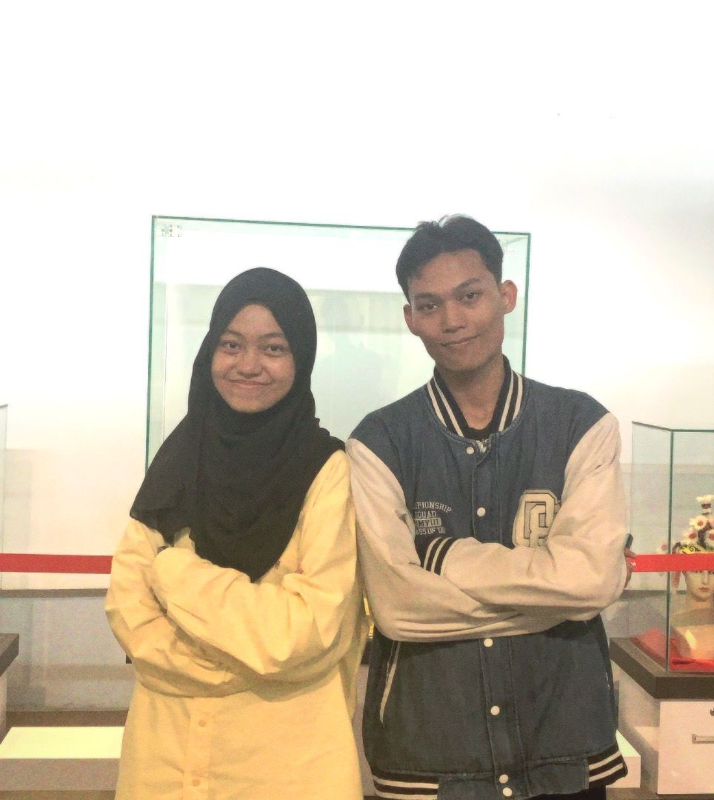
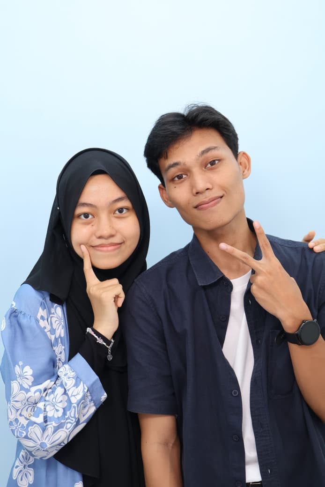
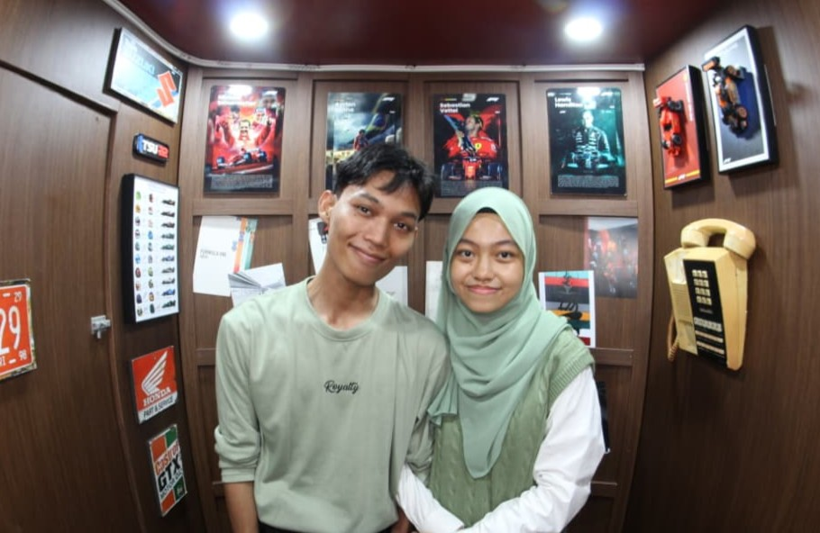
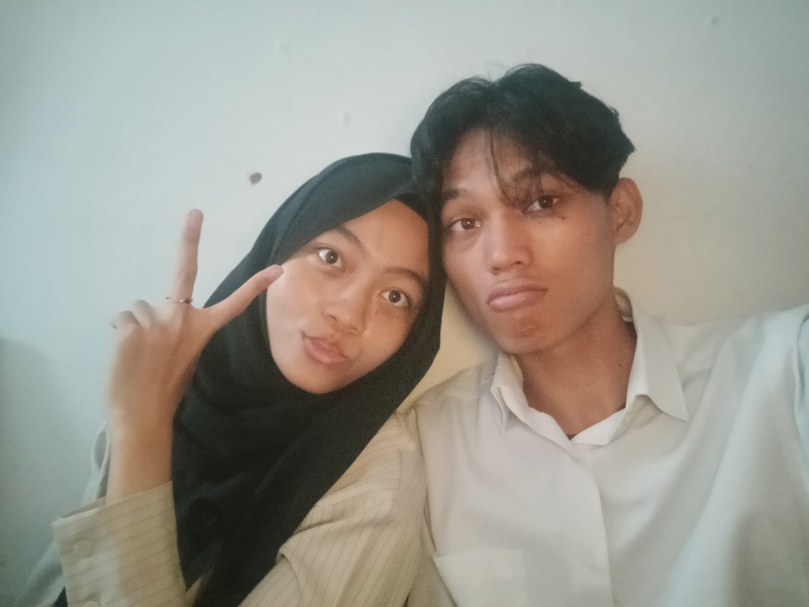
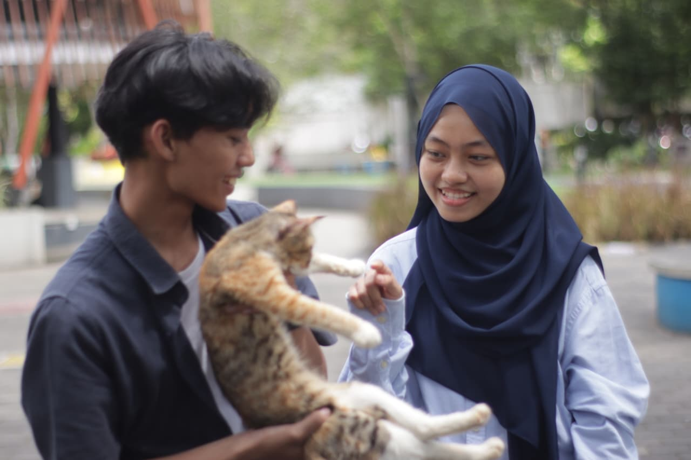

our story
Isi dulu bub sebelum bisa lanjut HEHHEHEHE
Klik amplopnya❤️
Halooo Sayangg
udahh ndak terasa yaa sayang cerita kita udah sampai sini,
jadi kakak mau ngajak sayangku yang paling cantik ini
buat melihat perjalanan yang sudah kita lewati bersama.
Dari awal kita bertemu,
sampai hari ini.
so...
ayo dek, ikut kakak buat liat
perjalanan cerita kita. ❤️

Semuanya berawal dari satu
kelompok Bahasa Inggris.
Saat itu, mungkin kita nggak
pernah menyangka ya dek, yang tadinya dari
teman kelompok, berakhir jadi teman hidup... aw
Awalnya juga kita cuma dua orang
yang kebetulan berada di
kelompok yang sama, itu juga kakak gk tau adek itu yang mana.
Tapi sekarang... damnnn
Dari yang tadinya gk kenal,
eh sekarang malah jadi orang yang selalu kakak
kenang
Bener bener tanpa kakak sadari,
pertemuan sederhana itu menjadi
awal dari cerita kakak dengan adek my kisah.❤️

Awalnya kita cuman bahas tugas dek yaa..
Bener bener cuma bahas tugas, dan
nggak ada yang spesial.
Nggak pernah kepikiran kakak kalau
dari obrolan sederhana tentang
tugas itu, malah bakal jadi awal
dari my kisah.
Lucuuu bangettt hehheheh...
Yang tadinya cuman sekadar nanya
tugas,
sekarang malah jadi orang
yang paling Kakak cari chatnya nich. ❤️

Kalau di inget inget kembali..
Pertama kali kakak ketemu adek itu.
Pas kita ada di kampus waktu matkul manajemen.
Kelompok Adek sedang presentasi,
lalu Kakak memberikan
sebuah pertanyaan...
Terus dari banyaknya kelompok di tempat adek,
adek yang jawab pertanyaan kakak
Sederhana sih memang...
tapii cara adek menjawab pertanyaan kakak itu baguss bangett,
di tambah kakak ingat banget senyuman adek yang manis dan tulus itu,
kalo orang lain pasti udah jatuh cinta pada pandangan pertama sih pasti.
Dan dari situ kakak sadar ada seseorang yang semanis itu di kampus,
walaupun saat itu kakak ndak tau dan tidak mencari tau namanya adek karena sifat kakak yang memang dari sananya cuek sih skksksk.
Mungkin saat itu adek juga gk tau kakak siapa sebelumnya.
Tapi jelas dari situ, adalah salah
satu awal dari cerita kita. ❤️

Itu Adalah hari dimana dua orang yang
awalnya hanya berada dalam
satu kelompok tugas...
Akhirnya memutuskan untuk
memulai sebuah cerita bersama.
Kakak masih ingat banget di hari itu kita di bantu disatukan oleh organisai,
saat itu kakak akhirnya bisa kenalan sama keluaraga adek dan di sambut sangat baik, bahkan di restui.
Dan sejak hari itu,
cerita kita bukan lagi tentang
Kakak dan Adek yang kebetulan
bertemu.
Tapi tentang Kakak dan Adek
yang memilih untuk berjalan
bersama.. ❤️
Setelah hari itu,
cerita kita mulai dipenuhi
dengan banyak momen yaa adek.
Ada tawa,
ada kesel,
ada sedih,
ada cerita,
ada hari-hari sederhana,
dan ada banyak kenangan
yang mungkin akan selalu
Kakak ingat.




Dan sekarang...
Kalau kita melihat kembali
semua yang sudah kita lewati,
rasanya lucu dan sangat menyenangkan sebagaimana semuanya
bisa sampai sejauh ini.
Dari yang awalnya cuma satu
kelompok Bahasa Inggris...
Dari obrolan yang cuma
membahas tugas...
Dari sebuah pertanyaan
di kelas...
Sampai akhirnya...
Kakak dan Adek ada di sini.
Masih bersama.
Masih belajar.
Masih mencoba memahami
satu sama lain.
Dan masih saling mencintai. ❤️
Hal terakhir yang ingin Kakak sampaikan..
sayang,
kakak menulis surat ini bukan
karena kita sedang ada masalah,
bukan juga karena kakak ingin
meminta maaf atas sesuatu.
kakak cuma ingin menyampaikan
sesuatu yang mungkin selama ini
sulit kakak ungkapkan dengan baik
lewat chat.
kakak sadar, selama kita bersama,
kakak masih banyak belajar.
belajar memahami adek,
belajar mengerti perasaan adek,
belajar mengontrol ego kakak,
dan belajar bahwa mencintai
seseorang bukan berarti harus
selalu mendapatkan apa yang
kakak inginkan.
kadang kakak terlalu banyak berpikir.
kadang kakak terlalu bergantung
pada perhatian adek.
kadang ego kakak membuat kakak
lupa melihat dari sisi adek.
tapi dari semua itu, kakak ingin
adek tahu satu hal, kakak tidak
pernah bermaksud untuk membuat
adek merasa tidak dihargai atau
merasa bahwa rasa sayang adek
tidak cukup untuk kakak.
kakak percaya adek sayang sama kakak.
kakak tahu itu.
mungkin terkadang kakak hanya
terlalu banyak berpikir sampai
lupa bahwa rasa sayang tidak harus
selalu dibuktikan dengan cara yang
kakak inginkan.
terima kasih ya sayang karena selama ini
adek mau jujur sama kakak.
terima kasih karena adek mau
mengingatkan kakak ketika ego
kakak mulai terlalu besar.
terima kasih karena adek mau bilang
apa yang adek rasakan, bahkan ketika
mungkin itu tidak mudah untuk
disampaikan.
kakak juga belajar dari adek bahwa
hubungan ini bukan tentang siapa
yang harus selalu mengalah,
siapa yang harus selalu memimpin,
atau siapa yang paling benar.
kakak ingin kita menjadi dua orang
yang bisa saling mendengarkan,
saling memahami, dan kalau ada
perbedaan, kita cari jalan tengahnya
bersama.
kakak tidak berjanji akan menjadi
pasangan yang sempurna.
kakak juga tidak bisa menjamin
kakak tidak akan pernah salah lagi.
tapi kakak bisa berjanji bahwa
kakak akan terus belajar.
belajar menjadi seseorang yang
lebih baik untuk dirinya sendiri,
dan juga untuk adek.
kalau suatu hari kakak kembali
terbawa ego, tolong ingatkan kakak.
kalau suatu hari adek merasa lelah,
jangan pendam sendiri.
bilang sama kakak.
kakak ingin kita sama-sama belajar
untuk lebih terbuka, bukan saling
menebak apa yang ada di dalam hati
masing-masing.
kakak mungkin tidak selalu tahu
cara mencintai adek dengan sempurna.
tapi kakak tahu satu hal.
kakak ingin terus belajar mencintai
adek dengan cara yang lebih baik,
setiap harinya.
terima kasih sudah menjadi bagian
dari perjalanan kakak.
dan terima kasih karena sampai
hari ini, adek masih memilih untuk
berjalan bersama kakak.
dengan segala kekurangan kakak,
kakak.
Sejak 18 Desember 2025
Setiap angka di sini bukan cuma
tentang waktu.
Tapi tentang setiap tawa,
setiap cerita,
setiap perdebatan,
setiap rasa rindu,
dan setiap momen yang sudah
kita lewati bersama.
Dan Kakak berharap...
angka ini akan terus bertambah. ❤️
18 Desember 2025
Hari dimana cerita kita dimulai.
Dan hari ini...
cerita itu masih terus berjalan.

Adek...
Kakak nggak tahu akan seperti apa
perjalanan kita ke depannya.
Tapi selama Adek masih mau berjalan
bersama Kakak, Kakak ingin terus
membuat cerita baru bersama Adek.
Karena menurut Kakak...
cerita kita belum selesai. ❤️
Terima kasih sudah menjadi bagian
dari hidup Kakak.
Terima kasih sudah hadir,
sudah bertahan,
sudah menemani,
dan sudah memilih Kakak sampai
hari ini.
Semoga nanti, ketika kita melihat
kembali semua ini, kita bisa tersenyum
dan berkata...
"Ternyata kita sudah sejauh ini ya sayang."
Karena ini bukan akhir dari cerita kita.
Ini baru salah satu halaman dari
cerita kita bersama.